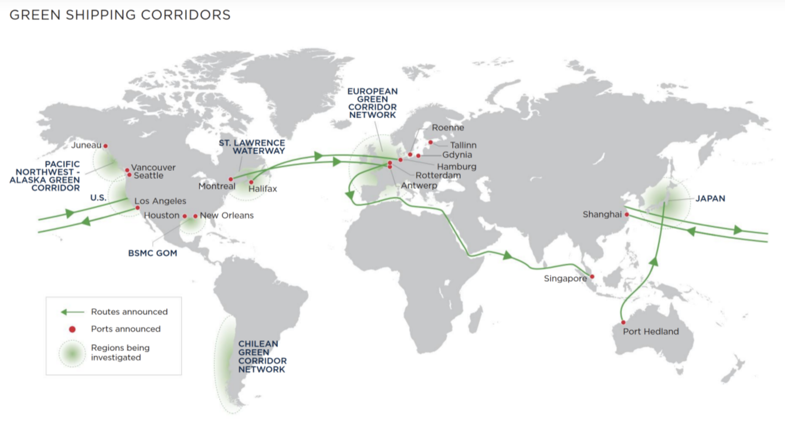
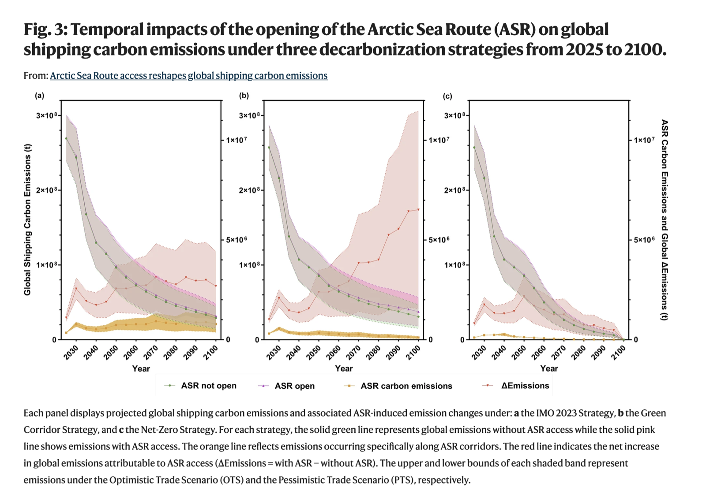

A Systems Perspective Toward Net-Zero in Maritime Transport
Photographed by Arvind Bhallamudi, San Francisco 2025
Shipping is responsible for roughly 3% of global greenhouse gas emissions, and almost all of the industry’s energy still comes from fossil fuels. The sector has to move toward lower- and zero-carbon energy, but there is no single replacement fuel waiting to take diesel’s place.
Hydrogen, ammonia, methanol and biofuels are no longer purely experimental, but affordably producing enough low-carbon versions of these fuels and getting them to the ports where ships need them is a much harder problem.
A ship’s working life is 20 to 30 years, which means new vessels need to start being built with this transition in mind by the end of this decade if the fleet is going to look meaningfully different by 2050. Shipbuilders, engineers, charterers, financiers and fuel suppliers all have to move together for that to happen, and right now they aren’t.
There is no shortage of retrofit options for the roughly 60,000 merchant ships already on the water: wind propulsion, routing optimized to follow favorable winds and currents, lower-resistance hull and propeller designs, air lubrication, smaller electric ships for short routes, and simply running slower to save fuel.
The steel in those ships also needs to move toward a circular, renewable system, in terms of the power that drives them and the materials and resources they’re built from. But unlike cars or aircraft, each of those ships was built to a yard’s own specification, which makes fleet-wide standardization genuinely difficult.
The industry is not waiting for one perfect technology. A growing ecosystem is addressing emissions from different directions: use less energy, change the energy source, optimize how ships operate, and redesign the infrastructure around them.

None of these technologies solves the problem alone. The more interesting possibility is how they combine: a more efficient hull, wind assistance, hybrid propulsion, optimized routing and a low-carbon fuel can significantly reduce the amount of new energy a ship needs.
The transition may therefore look less like replacing diesel with one new fuel and more like rebuilding the entire energy system around the vessel.
A ship’s emissions don’t just depend on what powers its engine. They also depend on where it is allowed to go.
The 2026 closure of the Strait of Hormuz is a sharp example. The strait normally carries roughly a fifth of global petroleum liquids consumption, making it one of the world’s most important maritime choke-points. When access is disrupted, some vessels are forced to wait, while others were rerouted through longer and more expensive journeys. The Organization for Economic Co-operation and Development (OECD) found that the re-routing increased fuel consumption and CO₂ emissions for affected tanker fleets, even as total emissions fell in some areas because other ships were stranded or unable to sail.
The same dynamic has played out around the Red Sea, where security risks have pushed many carriers around the Cape of Good Hope, adding up to 17 days to some journeys.
Then there is the opposite phenomenon happening in the Arctic.
As sea ice retreats, routes such as the Northern Sea Route are becoming increasingly accessible. In 2026, commercial traffic through the Arctic has accelerated, with vessels using the route to connect Asian and European markets while avoiding disruptions elsewhere. Some journeys can be significantly shorter than conventional routes through the Suez Canal.
On the surface, this looks like a climate win: shorter distance means less fuel, and less fuel means fewer emissions.
But it isn’t that simple. A shorter route can make shipping cheaper, which can make more shipping economically attractive. More ships using the Arctic can erase the emissions savings from each individual voyage. Research published in Nature Communications estimates that expanded access to Arctic Sea Routes (ASR) could ultimately increase global shipping emissions despite reducing the distance and emissions of individual voyages. Their results indicate that ASR use will increase global shipping emissions by 8.2% by 2100, with Arctic emissions rising from 0.22% to 2.72%.

There is also a particularly uncomfortable feedback loop: climate change is making the Arctic more accessible to shipping, and shipping through the Arctic can in turn create new climate impacts. Black carbon emitted by ships can settle on snow and ice, absorbing more solar radiation and contributing to warming. Recent research published in Nature Sustainability estimates that by 2050, Arctic transit shipping could generate up to US$2.3 billion annually. And black carbon emissions are expected to reach 2,200 tons, with a regional maximum temperature response of 2.0–2.9 mK per US$1 billion of economic benefit.
The lesson is bigger than the Arctic or Hormuz.
A shipping system optimized only for the shortest or cheapest route may simply move its environmental costs somewhere else.
That makes route planning, geopolitical resilience and climate policy part of the same problem as fuel and propulsion. The future shipping network may need to optimize not just for time and cost, but for carbon intensity, reliability, ecological risk and the availability of low-carbon energy along the route.
There is another part of the shipping system that rarely appears in discussions about decarbonization: the person placing the order.
Every container ship ultimately exists because someone, somewhere, wants something moved. The growth of global e-commerce has made that connection harder to see. A pair of shoes, a phone case or a piece of furniture can be ordered from the other side of the world with a few clicks, and the environmental cost of moving it is largely invisible to the person buying it.
Amazon is an obvious example, but the phenomenon is much bigger than one company. Global supply chains allow products to be designed in one country, manufactured in another, assembled somewhere else and delivered to a consumer thousands of kilometres away. E-commerce has also increased the number of smaller individual shipments, returns and time-sensitive deliveries that move through the logistics system. UN Trade and Development identifies transport, warehousing, packaging and returns as important parts of the environmental footprint.
That does not mean buying locally is always better.
If someone drives across a city to buy a single product, while a delivery vehicle drops dozens of packages along the same route, the delivery can actually have a lower transport footprint. Research comparing online and physical retail has found that the result depends heavily on travel distance, delivery density, transport mode, basket size and how the logistics network is organized.
The more useful question is therefore not simply “Did this product travel far?” but “How much movement did my purchase create?”
Buying locally can eliminate an international freight leg altogether, particularly when the alternative is a product manufactured overseas and shipped thousands of kilometres. But other choices can matter just as much: buying fewer things, choosing products that last longer, consolidating orders, accepting slower delivery, avoiding unnecessary returns and choosing repair, reuse or second-hand goods.
Speed is particularly important. Same-day and next-day delivery can require less efficient logistics, more fragmented shipments and, in some cases, air freight. Same-day delivery can significantly increase emissions compared with standard delivery, while slower delivery allows logistics networks to consolidate orders and optimize routes.
This creates another uncomfortable feedback loop.
We demand cheap goods → companies optimize for global supply chains → shipping makes those goods cheap → cheap goods encourage more consumption → more consumption creates more shipping demand.
Decarbonizing the ship without questioning that loop only addresses one side of the equation.
The future of low-carbon shipping therefore depends partly on consumer behavior, not asking everyone to stop buying things from abroad, but on making the carbon consequences of consumption visible and giving people better choices.
A shipping system designed around slower delivery, consolidated freight, durable products, local and regional production where practical, and circular models of repair and reuse would need fewer ton-kilometres in the first place.
The cleanest container is still the one that never needs to sail.
Underneath the engineering is a more basic economic problem. Fossil bunker fuel is cheap, supported by decades of existing infrastructure, and nobody wants to be the shipowner who pays more to go first.
The leading alternatives all carry trade-offs. Ammonia is toxic and requires new safety systems and bunkering infrastructure. Methanol is easier to handle but has lower energy density and requires significant new fuel supply. Hydrogen is even harder to store and transport onboard. Biofuels can work with existing vessels more easily, but their availability is constrained by feedstock and production capacity.
Climate financing, meanwhile, is reluctant to fund technologies that aren’t proven, but they can’t become proven without funding and deployment. The result is a classic chicken-and-egg problem: the industry needs proven technologies to unlock investment, but those technologies need investment and deployment to become proven and affordable.
One attempt to break this deadlock has been the shipping industry’s long-standing proposal for a $5 billion international R&D fund, financed through a mandatory contribution of $2 per tonne of marine fuel over a 10-year period. The proposal from the International Chamber of Shipping and industry partners was intended to accelerate research, pilot projects and the development of commercially viable zero-carbon ships. It remains an industry proposal rather than an established global fund.
Container shipping lines and large retailers are separately pushing their supply chains to decarbonize in response to regulation, stakeholder expectations and investor pressure. That creates a second source of demand alongside government policy and gives the industry a clearer commercial stake in actually getting there.
The regulatory direction is becoming clearer too. International Maritime Organization’s 2023 strategy calls for at least a 40% reduction in the carbon intensity of international shipping by 2030, increasing uptake of zero- and near-zero-emission fuels and technologies, and net-zero emissions by or around 2050.
The bottleneck is no longer a lack of ideas. It is coordination.
A green ship is useless if its fuel isn’t available at the destination port. And green fuel is useless if ships aren’t equipped to use it. A zero-emission vessel still operates in a system built around fossil infrastructure. A more efficient route can become irrelevant when a geopolitical crisis closes a major choke-point. And even the cleanest vessel is still moving goods because someone, somewhere, decided they needed them.
The system therefore needs to change at multiple levels at once: regulation that creates demand for cleaner shipping, finance that absorbs early risk, ports that build new infrastructure, fuel producers that create reliable supply, shipowners willing to invest before every uncertainty has been resolved, and digital systems that can optimize vessels across an increasingly unpredictable network.
The final lever outside the shipping industry itself: demand.
Decarbonization cannot only mean finding ways to move the same amount of stuff with fewer emissions. It also means asking whether everything needs to move as far, as quickly or as often as it currently does. Longer-lived products, repair and reuse, more regional production where practical, consolidated deliveries and less dependence on next-day shipping can reduce the amount of freight the system needs to move in the first place.
Shipping needs to become resilient to geopolitical disruption and a changing climate, not just more efficient under ideal conditions. Efficiency, resilience and decarbonization therefore cannot be treated as separate problems.
This makes shipping a particularly large commercial opportunity for climate technology. The next generation of companies won’t just be building cleaner engines. They’ll be working across fuels, robotics, materials, software, ports, infrastructure, logistics and the systems that shape consumer demand.
There is no single fix here.
What’s needed is expertise built across sectors that don’t normally talk to each other, and new systems for moving energy, goods and information that can route around the complexity of geopolitics and consumerism rather than waiting on it to resolve.
Hope you enjoyed this read!
Check out Natural Flux Studio for more such insights.